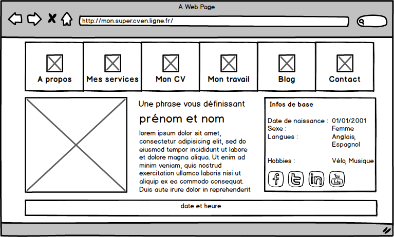
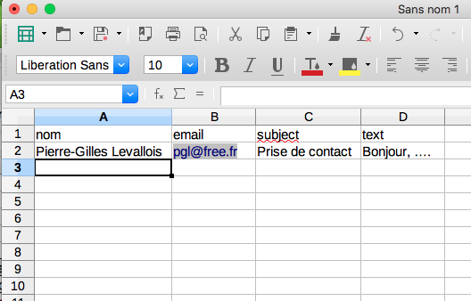
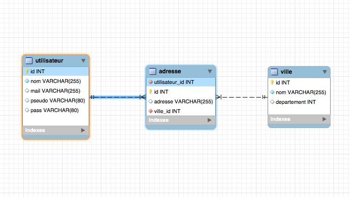
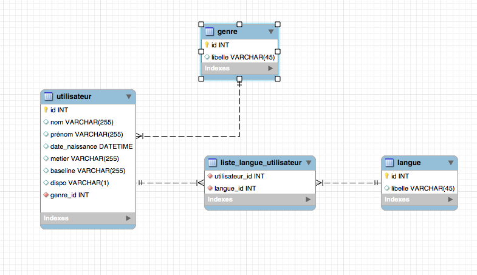
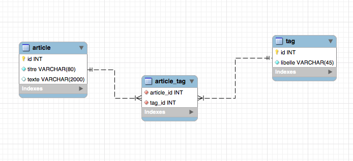
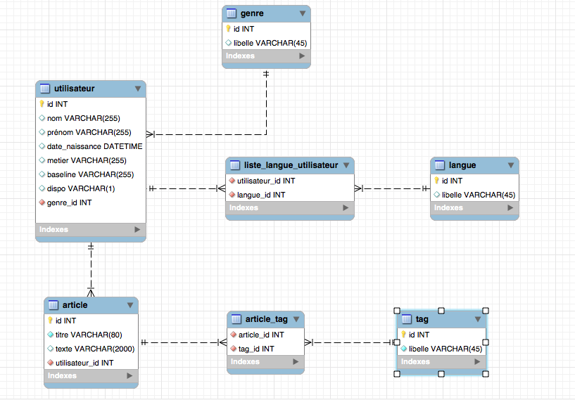
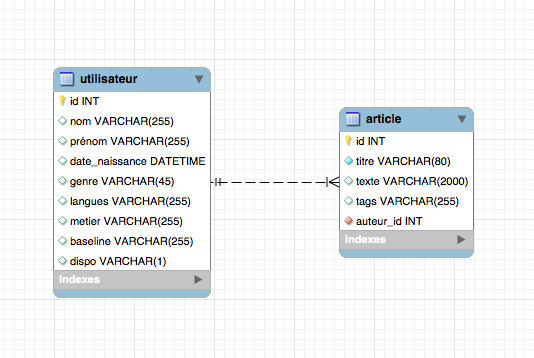

Cours Programmation Web


Pierre-Gilles Levallois
Twitter : @Pilooz
LinkedIn : https://www.linkedin.com/in/pglevallois/
- 1996 : Data Engineer : SQL Infocentre
- 1997 : Dba Oracle
- 1998 : Lead Dev sur Laclasse.com 15 ans
- 2017 : Coordonateur Technique de l'UrbanLab
- 2019 : Développeur Indépendant
Organisation du module
- 6 séances de 3h de cours + TP
- 4 séances Projet Web
Et Vous ?
Introduction
2 types de sites
- Statiques : Pages réalisées uniquement en HTML et css
- Dynamiques : Utilisation d'un langage intermédiaire pour générer les pages HTML/CSS.
Mais ? Pourquoi faire ?

- Afficher des pages dont les contenus changent
- Personnaliser le contenu en fonction du profil de l'utilisateur
- Récupérer et traiter des données envoyées dans un formulaire
Fonctionnement du web statique

Fonctionnement du web dynamique

Fonctionnement du web dynamique

Fonctionnement du web dynamique

PHP ?
-
Inventé en 1994 par un Groëlandais : Rasmus Lerdorf

- Distrubué en Open Source dès 1995
- Langage de programmation Web exécuté côté serveur
<!-- some HTML Code...-->
<?php
echo "Hello World !";
?>
<!-- some HTML Code...-->
MySQL ?
-
Inventé en 1995, par David Axmark, Michael Widenius, et Allan Larsson


- Moteur de base de données
- Stockage et structuration des données
- Langage d'interrogation : SQL
SELECT id, name, description
FROM products
WHERE id > 100
ORDER BY id DESC;
En Résumé
2 types de sites web :Chapitre 1
L'environnement de travailDe quoi a-t-on besoin pour développer ?
- Un éditeur de texte pour écrire du code : VS Code, SublimeText, Atom, ...
- Le moteur PHP pour exécuter notre code.
- Le moteur de base de données MySQL
- Un bon navigateur qui respecte à peu près les standards du Web : Chrome, Firefox...
- Un serveur Web pour servir nos pages : Apache, Ngnix, ...
Let's Install...


Quelques plugins indispensables pour VSCode

Coffee - break !
Chapitre 2
Utiliser PHP
- Hello world !
- Les inclusions
- Les variables et leur portées
- Les structures itératives
- Les fonctions
- GET et POST
- Les sessions
La page statique
<!DOCTYPE html>
<html lang="fr">
<head>
<meta charset="UTF-8">
<meta name="viewport" content="width=device-width, initial-scale=1.0">
<title>Hello world !</title>
</head>
<body>
<p>Hello World !</p>
</body>
</html>
html
La page dynamique
<!DOCTYPE html>
<html lang="fr">
<head>
<meta charset="UTF-8">
<meta name="viewport" content="width=device-width, initial-scale=1.0">
<title>Hello world !</title>
</head>
<body>
<?php
// Ici du code php pour générer du contenu...
echo "Hello world from php !
";
?>
</body>
</html>
php
Les inclusions
include, include_once, require, require_once ?
<?php
// Ici, mon fichier index.php
include_once("header.php");
include_once("content.php");
include_once("footer.php");
?>
La grande force de PHP est qu'il est possible d'inclure un fichier php dans un autre.
- ré-utiliser des composants (le header du site par exemple)
- Ecrire des frameworks (Synphony, Laravel, ...)
| Include | Require |
|---|---|
| Renvoie un warning lors d'une erreur | Ne renvoie pas de warning |
| L'exécution du script php continue | L'exécution du script php s'arrête à la 1ere erreur. |
Les variables et leur portées
locales, globales, super-globales ? What's this ? 3 type de variables
<?php
$var1="Valeur1";
$var2=3.14159;
$var3=Array(1, 3, 5, 7, 9);
...
?>
tester
Les types de données : types scalaires
- boolean
$var1=true; - int
$var2=42; - float
$var3=3.14159265359; - string
$var4="I love PHP so much !";
Les types de données, suite... types composés : lea tableaux
<?php
$var3 = Array(1, 3, 5, 7, 9);
$color = [ "a" => "vert", "b" => "bleu", "c" => "orange" ];
?>
tester
Les types de données, suite... types composés : le type object
<?php
class abeille
{
function vole()
{
echo "Bzz Bzz je vole.";
}
function butine() {
echo "Yala ! je butine..."
}
}
$abeille1 = new abeille;
$abeille2 = new abeille;
$abeille1->vole();
$abeille2->butine();
?>
tester
Les types de données, suite... types composés
- iterable : des objets itérables (sorte de listes).
- callable : des callbacks à passer en paramètres de fonctions.
Les types de données, suite... et fin ou presque... types spéciaux
- resource : variable spéciale, contenant une référence vers une ressource externe.
- NULL : c'est une variable sans valeur.
<?php
$var = NULL;
$file = fopen("c:\\folder\resource.txt", "r");
?>
tester
Pour aller plus loin...
https://www.php.net/manual/fr/language.types.phpLes structures de contrôle et fonctions
| A vous de travailler... | |
|
Travail par individuel ou en binôme
- Allez sur php.net.
- Lisez la section correspondante
- Faites tourner les exemples proposés
- Résumez en 1 ou 2 phrases simples
if, else, elseif/else if
<?php
?>
tester
while, do while
<?php
?>
tester
for, foreach
<?php
?>
tester
switch
<?php
?>
tester
Opérateurs et Expressions
<?php
?>
tester
Les fonctions
<?php
?>
tester
Coffee - break !
Récupérer les données du navigateur
Problématique : Comment récupérer et traiter des données envoyées depuis le navigateur ?
Exemple : le formulaire d'authentification

Récupérer les données du navigateur
Il existe des variables PHP qui stockent les données envoyées par le navigateur.
- $_GET[] : Tableau qui stocke les données de GET Http.
- $_POST[] : Tableau qui stocke les données postées lors d'un POST http.
<?php
echo 'Bonjour ' . htmlspecialchars($_GET["name"]) . '!';
?>
tester -
exercice2 -
solution
Les sessions
Problématique
Comment garder le contact avec le navigateur ?
Comment distinguer plusieurs utilisateurs différents ?
Comment réaliser une authetification des utilisateurs ?
Comment préserver les données entre les accès au serveur ?
Les sessions
- La session perment d'assigner à chaque visiteur un identifiant unique, appelé identifiant de session.
- Coté serveur : il es stocké dans un fichier, en mémoire, dans une base de données.
- Côté client : Il peut être stocké soit dans un cookie, soit propagé dans l'URL.
<?php
// Au tout début du code
session_start();
....
?>
Exercice 3 solution
Pratiquons...
Réaliser une page qui vous met en valeur ! 
Références
- Twitter Bootstrap : https://getbootstrap.com/
- Votre bible du PHP : https://www.php.net/
Pour aller plus loin...
- Routing du serveur web (apache/NGinx): ...?nav=truc => .../truc
- Pour bien séparer les couches, et faciliter la maintenance et le ré-emploi, il y a le modèle MVC. Symphony, Laravel, CakePHP, ... https://fr.wikipedia.org/wiki/Liste_de_frameworks_PHP
En Résumé
- PHP est un langage de programmation exécuté côté serveur, comportant des variables, des fonctions, des structures de contrôles, et la possibilité d'inclure un fichier dans un autre.
- Il permet de génrérer des sites dynamiques, avec authentification et gestion de sessions.
- De nombreux framework existent, Symphony et Laravel sont les plus connus.
Chapitre 3
- Définitions
- De la simple table à la base de données relationnelle
- Structuration, et optimisations
- Outils : phpMyAdmin, MySQL Workbench
Définitions
Une base de données est un outil de stockage des informations, de façon structurée et optimisée.Son moteur permet la manipulation des données (lecture, écriture, structuration) via un langage d'interrogation standardisé : le SQL.
De la simple table...
Ce truc est une base de données, mais... ... des questions se posent...
???
- Comment partager ces données facilement ?
- Avec de la mise à jour en temps réel ?
- Multi-utilisateur ?
- Comment avoir une structuration plus complexe ? Autre qu'un fichier plat ?
- Comment modéliser un métier ?
- Comment gérer des gros volumes de données ?
- Comment accéder aux données rapidement ?
...à la base de données relationnelle

/!\ Boring Slide : Les cardinalités
Les cardinalités possibles sont :
- 0,1 : au minimum 0, au maximum 1 seule valeur (CIF)
- 1,1 : au minimum 1, au maximum 1 seule valeur (CIF)
- 0,n : au minimum 0, au maximum plusieurs valeurs
- 1,n : au minimum 1, au maximum plusieurs valeurs
Exemple
Exercice 1 : modélisons de la base de données
objectif : Créer la structure de base de données qui permettra d'alimenter votre site perso.Voici les user-stories décrivant comment faire évoluer votre site :
- En tant propriétaire du site, je veux pouvoir extraire mes infos persos d'une BDD afin de les afficher sur la home.
- En tant que propriétaire du site, je veux afficher 5 publications dans l'ordre anté-chronologique afin de peupler la rubrique blog de mon site.
Une aparté sur les user-stories
Dans une méthode de développement agile, c'est une façon de décrire une nouvelle fonctionnalité.Elle peut être un dessin, un schéma de principe, ou juste du texte, du moment qu'elle décrit (story-telling) ce qu'un utilisateur doit pouvoir faire avec notre programme/site/logiciel.
En tant que [persona], je souhaite [souhait] afin de [but]...
Outils : MySQL Workbench
Un outil graphique pour les architectes BDD (conception), les développeurs et les administrateurs (exploitation, optimisation).Téléchargez et installez MySQL Workbench

US#1
En tant propriétaire du site, je veux pouvoir extraire mes infos persos d'une BDD afin de les afficher sur la home.- Créer une table "utilisateur" avec tous les attributs que l'on trouve sur la home
- Créer ce modèle dans notre base mySQL
- Saisir des données dans cette table
US#1 : Modèle complet(xe)
US#2
En tant que propriétaire du site, je veux afficher 5 publications dans l'ordre anté-chronologique afin de peupler la rubrique blog de mon site.- Créer une table article.
- Créer une table tag.
- Faire une association etre tag et article : un tag peut référencer plusieurs articles, un article peut être référencé par plusieurs tags.
- Saisir quelques tags, quelques articles, et associations.
US#2 : Modèle partiel qui fonctionne
US#1 et US#2 : Modèle complet
Dénormalisons un peu...
Mettez à jour votre BDD
Synchroniser votre base de données avec ce modèle, à l'aide de mysql Workbench.
Inserez des données de tests dans vos tables.
Inserez des données de tests dans vos tables.
Outils : phpMyAdmin
Une petite démo vaut mieux qu'un long discours... http://localhost/phpmyadmin/Coffee - break !
Chapitre 4
Relier PHP et MySQLprincipe de fonctionnement
Que se passe-t-il, à chaque appel de PHP ?- Se connecter à MySQL.
- Exécuter une requête SQL (sélection, insertions, mise à jour)
- Intégrer les données récupérées dans notre modèle de page
- Renvoyer la page construite.
Se connecter à MySQL depuis PHP
Driver mysqli (Mysql Improved).
<?php
echo "mysqli
";
// mysqli
$mysqli = new mysqli("localhost", "root", "toortoor", "cv_db");
$result = $mysqli->query($requete_SQL);
$row = $result->fetch_assoc();
echo "";
print_r($row);
echo "
";
?>
Tester
Se connecter à MySQL depuis PHP
Driver PDO (PHP Data Objects).
<?php
echo "PDO
";
// PDO
$pdo = new PDO('mysql:host=localhost;dbname=cv_db', 'root', 'toortoor');
$statement = $pdo->query($requete_SQL);
$row = $statement->fetch(PDO::FETCH_ASSOC);
echo "";
print_r($row);
echo "
";
?>
Tester
Mais alors quel choisir ?
Ces 2 drivers, font sensiblement la même chose. Il y a une grosse bataille d'experts sur quel est le meilleur driver !Peu importe !
On s'en fout !
On s'en fout !
Exercice 1 : Alimentation de notre Site perso par la BDD
- Alimenter la home avec vos infos personnelles depuis MySQL.
- Alimenter la rubrique "mon blog" avec des articles extraits de MySQL.
- Développer le modèle de détail de l'article
- Développer un formulaire d'ajout d'article.
- Réfléchir à comment ajouter les tags sur le même formulaire.
Exercice 2 : Peupler une table de contacts
- Alimenter une table de contacts, depuis le formulaire de la rubrique "contact".
- Faire une liste de tous les contacts.
- Avec des fonctions de modifications, suppression des données.
Exercice 3 : Ajouter une authentification au site
- Coder une authnetification contre la base de données.
- Intégrer un formulaire de login.
- Protéger toutes les fonctionnalités de gestion des contenus et la liste des contacts.
- Essayez de pirater votre site par injection SQL.